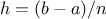
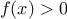
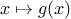

We have seen that
functions
are, in effect, abstractions that describe
compound operations on numbers independent of the particular numbers.
For example, when we
function cube(x) {
return x * x * x;
}
we are not talking about the cube of a particular number, but rather
about a method for obtaining the cube of any number. Of course we
could get along without ever defining this
function, by
always writing expressions such as
and never mentioning
cube explicitly.
This would place us at a
serious disadvantage, forcing us to work always at the level of the
particular operations that happen to be primitives in the language
(multiplication, in this case) rather than in terms of higher-level
operations. Our programs would be able to compute cubes, but our
language would lack the ability to express the concept of cubing. One
of the things we should demand from a powerful programming language is
the ability to build abstractions by assigning names to common
patterns and then to work in terms of the abstractions directly.
Functions
provide this ability. This is why all but the most
primitive programming languages include mechanisms for defining
functions.
Yet even in numerical processing we will be severely limited in our
ability to create abstractions if we are restricted to
functions
whose parameters must be numbers. Often the same programming pattern
will be used with a number of different
functions. To express such
patterns as concepts, we will need to construct
functions
that can
accept
functions
as arguments or return
functions
as values.
Functions
that manipulate
functions
are called
higher-order
functions. This section shows how higher-order
functions
can serve
as powerful abstraction mechanisms, vastly increasing the expressive
power of our language.
Consider the following three
functions. The first computes the sum
of the integers from
a through
b:
function sum_integers(a,b) {
if (a > b)
return 0;
else return a + sum_integers(a + 1,b);
}
The second computes the sum of the cubes of the integers in the given range:
function sum_cubes(a,b) {
if (a > b)
return 0;
else return cube(a) + sum_cubes(a + 1,b);
}
The third computes the sum of a sequence of terms in the
series
which converges to
(very slowly):
1
function pi_sum(a,b) {
if (a > b)
return 0;
else return 1.0 / (a * (a + 2)) +
pi_sum(a + 4,b);
}
These three
functions
clearly share a common underlying pattern.
They are for the most part identical, differing only in the name of
the
function, the function of a used to compute the term to be added,
and the function that provides the next value of a. We could generate
each of the
functions
by filling in slots in the same template:
The presence of such a common pattern is strong evidence that there is
a useful abstraction waiting to be brought to the surface. Indeed,
mathematicians long ago identified the abstraction of
summation of a series and invented “sigma
notation,” for example
to express this concept. The power of sigma notation is that it
allows mathematicians to deal with the concept of summation
itself rather than only with particular sums—for example, to
formulate general results about sums that are independent of the
particular series being summed.
Similarly, as program designers, we would like our language to
be powerful enough so that we can write a
function
that expresses the
concept of summation itself rather than only
functions
that compute particular sums. We can do so readily in our
functional
language by taking the common template shown above and
transforming the “slots” into formal parameters:
function sum(term,a,next,b) {
if (a > b)
return 0;
else return term(a) +
sum(term,next(a),next,b);
}
Notice that
sum takes as its arguments the lower and upper bounds
a and
b together with the
functions
term and
next.
We can use
sum just as we would any
function. For example, we can
use it (along with a
function
inc that increments its argument by 1)
to define
sum_cubes:
function inc(n) {
return n + 1;
}
function sum_cubes(a,b) {
return sum(cube,a,inc,b);
}
Using this, we can compute the sum of the cubes of the integers from 1
to 10:
With the aid of an identity
function
to compute the term, we can define
sum_integers
in terms of
sum:
function identity(x) {
return x;
}
function sum_integers(a,b) {
return sum(identity,a,inc,b);
}
Then we can add up the integers from 1 to 10:
sum_integers(1,10);
We can also define
pi_sum
in the same way:
2
function pi_sum(a,b) {
function pi_term(x) {
return 1.0 / (x * (x + 2));
}
function pi_next(x) {
return x + 4;
}
return sum(pi_term,a,pi_next,b);
}
Using these
functions, we can compute an approximation to
:
8 * pi_sum(1,1000);
Once we have
sum, we can use it as a building block in
formulating further concepts. For instance, the
definite integral of a
function
between the limits
and
can be approximated
numerically using the formula
for small values of

.
We can express this directly as a
function:
function integral(f,a,b,dx) {
function add_dx(x) {
return x + dx;
}
return sum(f,a + dx / 2,add_dx,b) * dx;
}
integral(cube,0,1,0.01);
integral(cube,0,1,0.001);
(The exact value of the integral of
cube
between 0 and 1 is 1/4.)
Exercise 1.30.
Simpson’s Rule is a more accurate method of numerical integration than
the method illustrated above. Using Simpson’s Rule, the integral of a
function
between
and
is approximated as
where
, for some even integer
, and
.
(Increasing
increases the accuracy of the approximation.) Define
a
function
that takes as arguments
,
,
, and
and returns
the value of the integral, computed using Simpson’s Rule.
Use your
function
to integrate
cube between 0 and 1
(with
and
), and compare the results to those of the
integral
function
shown above.
Exercise 1.31.
The
sum
function
above generates a linear recursion. The
function
can be rewritten so that the sum is performed iteratively.
Show how to do this by filling in the missing expressions in the
following definition:
Exercise 1.32.
- The sum
function
is only the simplest of a vast number of
similar abstractions that can be captured as higher-order
functions.3
Write an analogous
function
called product that returns the product of the values of a
function at points over a given range.
Show how to define
factorial in terms of
product. Also use product to compute approximations to
using the
formula4
-
If your product
function
generates a recursive process, write one that generates
an iterative process.
If it generates an iterative process, write one that generates
a recursive process.
Exercise 1.33.
-
Show that sum and product
(exercise 1.32) are both special cases of a still more
general notion called accumulate that combines a
collection of
terms, using some general accumulation function:
The function accumulate
takes as arguments the same term and range
specifications as sum and product, together with a combiner
function
(of two arguments) that specifies how the current
term is to be combined with the accumulation of the preceding terms
and a
null_value
that specifies what base value to use
when the terms run out. Write accumulate
and show how sum and product can both
be defined as simple calls to accumulate.
-
If your accumulate
function
generates a recursive process, write one that generates
an iterative process.
If it generates an iterative process, write one that generates
a recursive process.
Exercise 1.34.
You can obtain an even more general version of
accumulate
(exercise
1.33) by introducing the notion of a
filter on the terms to be combined. That is, combine only those
terms derived from values in the range that satisfy a specified
condition. The resulting
filtered_accumulate
abstraction takes the same arguments as accumulate, together with an additional
predicate of one argument that specifies the filter.
Write
filtered_accumulate as a
function.
Show how to express the
following using
filtered_accumulate:
-
the sum of the squares of the prime numbers in the interval
to
(assuming that you have a
is_prime
predicate already written)
-
the product of all the positive integers less than
that are relatively prime to
(i.e., all positive integers
such that
).
In using
sum as in section
1.3.1,
it seems terribly awkward to have to define trivial
functions
such as
pi_term and
pi_next just
so we can use them as arguments to our higher-order
function.
Rather than define
pi_next and
pi_term, it would be more convenient
to have a way to directly specify “the
function that returns its
input incremented by 4” and “the
function that returns the
reciprocal of its input times its input plus 2.” We can do this by
introducing
function definition expressions that look just like
function definition statements, but leave out the name of the function.
Using this new kind of expression, we can describe what we want as
and
Then our
pi_sum
function
can be expressed without defining any auxiliary
functions
as
function pi_sum(a,b) {
return sum(function(x) { return 1.0 / (x * (x + 2)); },
a,
function(x) { return x + 4; },
b);
}
Again using
a function definition expression,
we can write the
integral
function
without having to define the auxiliary
function
add_dx:
function integral(f,a,b,dx) {
return sum(f,
a + dx / 2.0,
function(x) { return x + dx; },
b)
*
dx;
}
The resulting
function
is just as much a
function
as one that is
created using
a function definition statement.
The only difference is that it has not
been associated with any name in the environment. In fact,
function plus4(x) { return x + 4; }
is equivalent to
var plus4 = function(x) { return x + 4; }
We can read a
function definition
expression as follows:
Like any expression that has a
function
as its value, a
function definition
expression can be used as the function expression in an application
combination such as
(function(x,y,z) {
return x + y + square(z);
})(1,2,3);
or, more generally, in any context where we would normally use a
function
name.
6 Note that the JavaScript parser requires parentheses
around the function in this case.
Using
var
to create local variables
Another use of
function definition expressions
is in creating local variables.
We often need local variables in our
functions
other than those that have
been bound as formal parameters. For example, suppose we wish to
compute the function
which we could also express as
In writing a
function
to compute
, we would like to include as
local variables not only
and
but also the names of
intermediate quantities like
and
. One way to
accomplish this is to use an auxiliary
function
to bind the local variables:
function f(x,y) {
function f_helper(a,b) {
return x * square(a) +
y * b +
a * b;
}
return f_helper(1 + x * y,
1 - y);
}
Of course, we could use a
function definition
expression to specify an anonymous
function
for binding our local variables. The body of
f then becomes a single call to that
function:
function f(x,y) {
return function(a,b) {
return x * square(a) +
y * b +
a * b;
}(1 + x * y, 1 - y);
}
A more convenient way to define local variables is by using
var within the body of
the function. Variables declared this way have the entire
function body as their scope.
7
Using
var, the
f function can be written as
function f(x,y) {
var a = 1 + x * y;
var b = 1 - y;
return x * square(a) +
y * b +
a * b;
}
Exercise 1.35.
Suppose we define the
function
function f(g) {
return g(2);
}
Then we have
f(square);
f(function(z) { return z * (z + 1); });
What happens if we (perversely) ask the interpreter to evaluate the
combination
f(f)?
Explain.
We introduced compound
functions
in
section
1.1.4 as a mechanism for abstracting
patterns of numerical operations so as to make them independent of the
particular numbers involved. With higher-order
functions, such as
the
integral
function
of
section
1.3.1, we began to see a more
powerful kind of abstraction:
functions
used to express general
methods of computation, independent of the particular functions
involved. In this section we discuss two more elaborate
examples—general methods for finding zeros and fixed points of
functions—and show how these methods can be expressed directly as
functions.
Finding roots of equations by the half-interval method
The
half-interval method is a simple but powerful technique for
finding roots of an equation
,
where
is a continuous
function. The idea is that, if we are given points
and
such that
,
then
must have at least one zero between
and
.
To locate a zero, let
be the average of
and
and compute
. If
,
then
must have a zero between
and
.
If
, then
must
have a zero between
and
. Continuing in this way, we can identify smaller and smaller
intervals on which
must have a zero. When we reach a point where
the interval is small enough, the process stops. Since the interval
of uncertainty is reduced by half at each step of the process, the
number of steps required grows as
,
where
is the
length of the original interval and
is the error tolerance
(that is, the size of the interval we will consider “small enough”).
Here is a
function
that implements this strategy:
function search(f,neg_point,pos_point) {
var midpoint = average(neg_point,pos_point);
if (close_enough(neg_point,pos_point))
return midpoint;
else {
var test_value = f(midpoint);
if (positive(test_value))
return search(f,neg_point,midpoint);
else if (negative(test_value))
return search(f,midpoint,pos_point);
else return midpoint;
}
}
We assume that we are initially given the function
together with
points at which its values are negative and positive. We first
compute the midpoint of the two given points. Next we check to see if
the given interval is small enough, and if so we simply return the
midpoint as our answer. Otherwise, we compute as a test value the
value of

at the midpoint. If the test value is positive, then
we continue the process with a new interval running from the original
negative point to the midpoint. If the test value is negative, we
continue with the interval from the midpoint to the positive point.
Finally, there is the possibility that the test value is 0, in which
case the midpoint is itself the root we are searching for.
To test whether the endpoints are “close enough” we can use a
function
similar to the one used in section
1.1.7 for
computing square roots:
9
function close_enough(x,y) {
return abs(x - y) < 0.001;
}
Search is awkward to use directly, because
we can accidentally give it points at which
’s
values do not have the required sign, in which case we get a wrong answer.
Instead we will use
search via the following
function, which
checks to see which of the endpoints has a negative function value and
which has a positive value, and calls the
search
function
accordingly. If the function has the same sign on the two given
points, the half-interval method cannot be used, in which case the
function
signals an error.
10
function half_interval_method(f,a,b) {
var a_value = f(a);
var b_value = f(b);
if (negative(a_value) && positive(b_value))
return search(f,a,b);
else if (negative(b_value) && positive(a_value))
return search(f,b,a);
else error("values are not of opposite sign: "+a+", "+b);
}
The following example uses the half-interval method to approximate
as the root between 2 and 4 of
:
half_interval_method(Math.sin, 2.0, 4.0);
Here is another example, using the half-interval method
to search for a root of the equation
between 1 and 2:
half_interval_method(
function(x) { return x * x * x - 2 * x - 3; },
1.0,
2.0);
Finding fixed points of functions
A number
is called a
fixed point of a
function
if
satisfies the equation
.
For some functions
we can locate
a fixed point by beginning with an initial guess and applying
repeatedly,
until the value does not change very much. Using this idea, we can
devise a
function
fixed_point that takes as inputs a function
and an initial guess and produces an approximation to a fixed point of
the function. We apply the function repeatedly until we find two
successive values whose difference is less than some prescribed
tolerance:
var tolerance = 0.00001;
function fixed_point(f,first_guess) {
function close_enough(x,y) {
return abs(x - y) < tolerance;
}
function try_with(guess) {
var next = f(guess);
if (close_enough(guess,next))
return next;
else return try_with(next);
}
return try_with(first_guess);
}
For example, we can use this method to approximate the fixed point of
the cosine function, starting with 1 as an initial
approximation:
11
fixed_point(Math.cos,1.0);
Similarly, we can find a solution to the equation
:
fixed_point(
function(y) { return Math.sin(y) + Math.cos(y); },
1.0);
The fixed-point process is reminiscent of the process we used for
finding square roots in section
1.1.7. Both are based on the
idea of repeatedly improving a guess until the result satisfies some
criterion. In fact, we can readily formulate the
square-root
computation as a fixed-point search. Computing the square root of
some number
requires finding a
such that
. Putting
this equation into the equivalent form
, we recognize that we
are looking for a fixed point of the function
12
, and we
can therefore try to compute square roots as
function sqrt(x) {
return fixed_point(
function(y) { return x / y; },
1.0);
}
// warning: does not converge!
Unfortunately, this fixed-point search does not converge. Consider an
initial guess
. The next guess is
and the next
guess is
. This results in an infinite
loop in which the two guesses
and

repeat over and over,
oscillating about the answer.
One way to control such oscillations is to prevent the guesses from
changing so much.
Since the answer is always between our guess
and

, we can make a new guess that is not
as far from
as
by averaging
with
,
so that the next guess after
is
instead of
.
The process of making such a sequence of guesses is simply the process
of looking for a fixed point of
:
function sqrt(x) {
return fixed_point(
function(y) { return average(y,x / y); },
1.0);
}
(Note that
is a simple transformation of the
equation
; to derive it, add
to both sides of the equation
and divide by 2.)
With this modification, the square-root
function
works. In fact, if
we unravel the definitions, we can see that the sequence of
approximations to the square root generated here is precisely the
same as the one generated by our original square-root
function
of
section
1.1.7. This approach of averaging
successive approximations to a solution, a technique we call
average damping, often aids the convergence of fixed-point
searches.
Exercise 1.36.
Show that the golden ratio
(section
1.2.2)
is a fixed point of the transformation
,
and use this fact to compute
by
means of the
fixed_point
function.
Exercise 1.37.
Modify
fixed_point so that it prints the sequence of
approximations it generates, using
the
newline and
display
primitives shown in exercise
1.23.
Then find a solution to
by finding a fixed
point of
. (Use Scheme’s
primitive
log
function,
which computes natural logarithms.) Compare the number of steps this takes with and without
average damping. (Note that you cannot start
fixed_point with a
guess of 1, as this would cause division by
.)
Exercise 1.39.
In 1737, the Swiss mathematician Leonhard Euler published a memoir
De Fractionibus Continuis, which included a
continued fraction
expansion for
,
where
is the base of the natural logarithms.
In this fraction, the
are all 1,
and the
are successively
1, 2, 1, 1, 4, 1, 1, 6, 1, 1, 8, …. Write a program that uses
your
cont-frac
function
from
exercise
1.38 to approximate
, based on
Euler’s expansion.
Exercise 1.40.
A continued fraction representation of the tangent function was
published in 1770 by the German mathematician J.H. Lambert:
where
is in radians.
Define a
function
(tan-cf x k) that computes an approximation
to the tangent function based on Lambert’s
formula.
K specifies the number of terms to compute, as in
exercise
1.38.
The above examples demonstrate how
the ability to pass
functions
as arguments significantly enhances
the expressive power of our programming language. We can achieve even
more expressive power by creating
functions
whose returned values are
themselves
functions.
We can illustrate this idea by looking again at the fixed-point
example described at the end of
section
1.3.3. We formulated a new version
of the square-root
function
as a fixed-point search, starting with
the observation that
is a fixed-point of the function
. Then we used average damping to make the
approximations converge. Average damping is a useful general
technique in itself. Namely, given a function
, we consider the
function whose value at
is equal to the average of
and
.
We can express the idea of average damping by means of the
following
function:
function average_damp(f) {
return function(x) {
return average(x,f(x));
}
}
The function
average_damp
is a
function
that takes as its argument a
function
f and returns as its value a
function
(produced by the
function definition expression) that, when applied to a number
x, produces the
average of
x and
f(x).
For example, applying
average_damp
to the
square
function
produces a
function
whose
value at some number
is the average of

and
.
Applying this resulting
function
to 10 returns the average of 10 and 100, or
55:
13
average_damp(square)(10);
Using
average_damp,
we can reformulate the square-root
function
as follows:
function sqrt(x) {
return fixed_point(
average_damp(
function(y) { return x / y; }),
1.0);
}
Notice how this formulation makes explicit the three ideas in the
method: fixed-point search, average damping, and the function
. It is instructive to compare this formulation of the
square-root method with the original version given in
section
1.1.7. Bear in mind that these
functions
express
the same process, and notice how much clearer the idea becomes when we
express the process in terms of these abstractions. In general, there
are many ways to formulate a process as a
function. Experienced
programmers know how to choose process formulations that are
particularly perspicuous, and where useful elements of the process are
exposed as separate entities that can be reused in other applications.
As a simple example of reuse, notice that the cube root of
is a
fixed point of the function
, so we can immediately
generalize our square-root
function
to one that extracts
cube
roots:
14
function cube_root(x) {
return fixed_point(
average_damp(
function(y) { return x / square(y); }),
1.0);
}
Newton’s method
When we first introduced the square-root
function, in
section
1.1.7, we mentioned that this was a special case of
Newton’s method.
If
 is a differentiable function, then a solution of
the equation
is a fixed point of the function
where
and
is the derivative of
evaluated at
.
Newton’s
method is the use of the fixed-point method we saw above to
approximate a solution of the equation by finding a fixed point of
the function
.
15
For many functions
and for sufficiently good initial guesses for
, Newton’s method converges very rapidly to a solution of
.
16
In order to implement Newton’s method as a
function, we must first
express the idea of derivative. Note that “derivative,” like
average damping, is something that transforms a function into another
function. For instance, the derivative of the function
is the function
. In general, if
is a
function and
is a small number, then the derivative
of
is
the function whose value at any number
is given (in the limit of
small

) by
Thus, we can express the idea of derivative (taking
to be, say,
0.00001) as the
function
function deriv(g) {
return function(x) {
return (g(x + dx) - g(x)) / dx;
}
}
var dx = 0.00001;
along with the definition
var dx = 0.00001;
Like
average_damp,
deriv is a
function
that takes a
function
as argument and returns a
function
as value. For example,
to approximate the derivative of
at 5 (whose exact
value is 75) we can evaluate
function cube(x) { return x * x * x; }
deriv(cube)(5);
With the aid of
deriv, we can express Newton’s method as a
fixed-point process:
function newton_transform(g) {
return function(x) {
return x - g(x) / deriv(g)(x);
}
}
function newtons_method(g,guess) {
return fixed_point(
newton_transform(g),guess);
}
The
newton_transform
function
expresses the formula at the
beginning of this section, and
newtons_method is readily defined
in terms of this. It takes as arguments a
function
that computes the
function for which we want to find a zero, together with an initial
guess. For instance, to find the
square root of
, we can use
Newton’s method to find a zero of the function
starting with
an initial guess of 1.
17
This provides yet another form of the square-root
function:
function sqrt(x) {
return newtons_method(
function(y) { return square(y) - x; },
1.0);
}
Abstractions and first-class
functions
We’ve seen two ways to express the square-root
computation as an instance of a more general method, once as a fixed-point
search and once using Newton’s method. Since Newton’s method
was itself expressed as a fixed-point process,
we actually saw two ways to compute square roots as fixed points.
Each method begins with a function and finds a
fixed
point of some transformation of the function. We can express this
general idea itself as a
function:
function fixed_point_of_transform(g,transform,guess) {
return fixed_point(transform(g),guess);
}
This very general
function
takes as its arguments a
function
g
that computes some function, a
function
that transforms g, and
an initial guess. The returned result is a fixed point of the
transformed function.
Using this abstraction, we can recast the first square-root
computation from this section (where we look for
a fixed point of the average-damped version of
)
as an instance of this general method:
function sqrt(x) {
return fixed_point_of_transform(
function(y) { return x / y; },
average_damp,
1.0);
}
Similarly, we can express the second square-root computation from this section
(an instance
of Newton’s method that finds a fixed point of the
Newton transform of
) as
function sqrt(x) {
return fixed_point_of_transform(
function(y) { return square(y) - x; },
newton_transform,
1.0);
}
We began section
1.3 with the observation
that compound
functions
are a crucial abstraction mechanism, because they permit us to
express general methods of computing as explicit elements in our
programming language. Now we’ve seen how higher-order
functions
permit us to manipulate these general methods
to create further abstractions.
As programmers, we should be alert to opportunities to identify the
underlying abstractions in our programs and to build upon them and
generalize them to create more powerful abstractions. This is not to
say that one should always write programs in the most abstract way
possible; expert programmers know how to choose the level of
abstraction appropriate to their task. But it is important to be able
to think in terms of these abstractions, so that we can be ready to
apply them in new contexts. The significance of higher-order
functions
is that they enable us to represent these abstractions
explicitly as elements in our programming language, so that they can
be handled just like other computational elements.
In general, programming languages impose restrictions on the ways in
which computational elements can be manipulated. Elements with the
fewest restrictions are said to have
first-class status. Some
of the “rights and privileges” of first-class
elements are:
18
- They may be named by variables.
- They may be passed as arguments to
functions.
- They may be returned as the results of
functions.
- They may be included in data structures.19
JavaScript,
unlike other common programming languages, awards
functions
full first-class status. This poses challenges for efficient
implementation, but the resulting gain in expressive power is
enormous.
20
Exercise 1.41.
Define a
function
cubic that can be used together with the
newtons_method
function
in expressions of the form
newtons_method(cubic(a,b,c),1);
to approximate zeros of the cubic
.
Exercise 1.42.
Define a
function
double that takes a
function
of one
argument as argument and
returns a
function
that applies the original
function
twice. For
example, if
inc is a
function
that adds 1 to its argument,
then
(double inc) should be a
function
that adds 2. What
value is returned by
double(double(double))(inc)(5);
Exercise 1.43.
Let
and
be two one-argument functions. The
composition
after
is defined to be the function
.
Define a
function
compose that implements composition. For
example, if
inc is a
function
that adds 1 to its argument,
compose(square,inc)(6);
returns 49.
Exercise 1.44.
If
is a numerical function and
is a positive integer, then we
can form the

th repeated application of
, which is defined to be
the function whose value at
is
. For
example, if
is the function
,
then the
th repeated application of
is
the function
. If
is the operation of
squaring a number, then the
th repeated application of
is the
function that raises its argument to the
th power. Write a
function
that takes as inputs a
function
that computes
and a
positive integer
and returns the
function
that computes the
th
repeated application of
. Your
function
should be able to be used
as follows:
repeated(square,2)(5);
Hint: You may find it convenient to use
compose from
exercise
1.43.
Exercise 1.45.
The idea of
smoothing a function is an important concept in
signal processing. If
is a function and
is some small number,
then the smoothed version of
is the function whose value at a
point
is the average of
,
, and
. Write a
function
smooth that takes as input a
function
that computes
and returns a
function
that computes the smoothed
. It is
sometimes valuable to repeatedly smooth a function (that is, smooth
the smoothed function, and so on) to obtained the
-fold
smoothed function. Show how to generate the
-fold smoothed
function of any given function using
smooth and
repeated
from exercise
1.44.
Exercise 1.46.
We saw in section
1.3.3
that attempting to compute square roots by naively finding a
fixed point of
does not converge, and that this can be
fixed by average damping. The same method works for finding cube
roots as fixed points of the average-damped
.
Unfortunately, the process does not work for
fourth roots—a single
average damp is not enough to make a fixed-point search for

converge. On the other hand, if we average damp twice (i.e.,
use the average damp of the average damp of
) the
fixed-point search does converge. Do some experiments to determine
how many average damps are required to compute
th roots as a
fixed-point search based upon repeated average damping of
. Use this to implement a simple
function
for computing
th roots using
fixed_point,
average_damp, and the
repeated
function
of exercise
1.44.
Assume that any arithmetic operations you need are available as primitives.
Exercise 1.47.
Several of the numerical methods described in this chapter are instances
of an extremely general computational strategy known as
iterative
improvement. Iterative improvement says that, to compute something,
we start with an initial guess for the answer, test if the guess is
good enough, and otherwise improve the guess and continue the process
using the improved guess as the new guess. Write a
function
iterative-improve that takes two
functions
as arguments: a method
for telling whether a guess is good enough and a method for improving
a guess.
The function iterative_improve should return as its value a
function
that takes a guess as argument and keeps improving the guess
until it is good enough. Rewrite the
sqrt
function
of
section
1.1.7 and the
fixed_point
function
of
section
1.3.3 in terms of
iterative_improve.